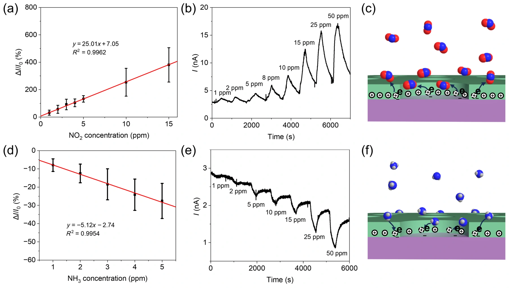

多孔有机单晶：兼顾电荷输运与气体接触
在亲水 SiO₂ 表面构筑 OTS 疏水点阵，结合微间距升华生长 C8-BTBT。利用冷却过程中的热应力释放，形成孔位置、尺寸和密度可调的多孔有机单晶薄膜。
多孔 C8-BTBT 单晶薄膜的制备与形貌
在亲水 SiO₂ 表面构筑 OTS 疏水点阵，结合微间距升华生长 C8-BTBT。利用冷却过程中的热应力释放，形成孔位置、尺寸和密度可调的多孔有机单晶薄膜。

NO₂ / NH₃ 动态响应与气体作用机理
多孔薄膜晶体管对 NO₂ 与 NH₃ 呈现相反方向的电流响应；NO₂ 在 1–15 ppm 范围内的灵敏度为 25.01 %·ppm⁻¹，计算检测限为 2.14 ppb，体现微纳结构与气体识别的协同。

论文来源
Fabrication and application of porous organic single-crystal films in highly sensitive gas sensors
Zhangjin Chen, Suhui Wang, Mingke Yu, Peng Li, Xu Zhang, Hong Wang, Tengxiao Guo, Chuan Liu
Nano Research 18 (2025), 94907299
DOI：10.26599/NR.2025.94907299AMBIC LaboratorySUN YAT-SEN UNIVERSITY